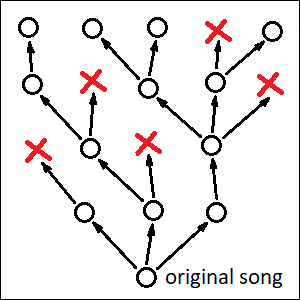

By “central planning” I mean a process which only generates one “perfect” solution to a given problem at a given time. By “competition” I mean a situation when multiple similar solutions to the same problem exist simultaneously and are judged on the basis of their actual performance “in the field”. Competition isn’t always possible, and it may seem like a waste of resources overall. The problem with central planning, on the other hand, is that it has limited creative potential, which makes it a less preferable innovation method whenever high performance becomes a priority. Examples of processes involving competition would be human culture, animal culture and (once again) biological life itself.
“Central planning” is responsible for creating things like songs written by professional composers and novels written by professional writers. Their decentralized counterparts (which are created through competition and exist in many different versions at the same time) would be folk songs, legends and fairy tales. Folk songs don’t seem to reach the level of complexity characteristic to a symphony by Beethoven, but there are actually a few objective reasons for that. First of all, there are not that many people out there who are capable of writing symphonies. Symphonies and novels can’t also be easily memorized in their entirety, which makes it difficult for them to travel from one human mind into another like folk songs do. And finally, professional art, in spite of all its merits, still isn’t entirely practical, which means that there’s limited pressure for making an ideal piece. In other words, our works of art aren’t necessarily perfect, quite often they are merely “good enough”. Besides, quite often the real thing we are looking for while reading a novel or listening to a symphony isn’t any perfect representation of our emotions or the world around, but rather personal connection with the human behind it. And we are talking about efficiency here, not about personal connections.
On the other hand, folk songs don’t have a single author. Different versions of them exist in different geographical regions, and every performer can add their own unique detail to what’s already there. It’s a process in which everybody takes part, nobody has full control over the final result, and the final goal itself is not defined in advance, and doesn’t even have to be unique. And yet, folk songs tend to capture things which are truly important to many people, and they do it well. They reach a level of performance that isn’t easy to match for a professional composer, when limited to this particular genre.
Analogies to folk songs in modern computerized world are internet memes. They are simple images or pieces of text which do it just right. They capture our emotions better than we ourselves would be able to. Memes appear by accident, they exist in many different variations simultaneously and get polished to perfection by numerous anonymous users. Memes have their own narrow niche, but in this niche they are able to do the job better than a symphony by Beethoven. Another example of things that are anonymous, exist in multiple versions and are polished to perfection, would be various “tips and tricks” of our everyday life. Like cooking recipes or methods for cleaning the house. All these things are extremely useful, but they are also pretty simple and numerous enough, and therefore their many original “authors” and contributors are easily forgotten.
I would also argue that this extends to scientific theories. A single mathematical theorem may have a name attached to it, but there will usually be many ways or styles of proving it, and some of them will become more popular in certain geographical regions or over time. The way we formulate scientific principles today is often very different from the language used by their original authors. This happens because different textbooks will use slightly different formulations, and some of them are simply slightly better than the others. I would argue that scientific theories evolve, in order to suit the needs of their changing applications. That they don’t have a single “canonical” representation, and that many anonymous authors add to them their invaluable and easily forgotten bits. Scientific theories are remarkably complex. But they are also useful, and this practicality justifies the effort of keeping many slightly different versions of them at once. Scientific theories compete with each other, they are not created by careful planning.
A single common word which would unite folk songs with scientific theories (and also with symphonies by Beethoven) is “culture”. It’s a phenomenon that’s not unique to humans. Some bird species are known to have song patterns which are learned from other birds, instead of being encoded in their DNA. These patterns will be different in different geographical locations, and when researchers separate a nestling from its family and move it to a foreign one, it will inherit the habits of local birds, rather than those of its biological parents.
If we were to draw a picture for the history of a folk song (or a bird song, for that matter), it would resemble a tree. Its nodes would be different versions of the song, and branches protruding from a given node would represent creative modifications by anonymous authors. Some branches will “die out”, because of being not popular or not useful enough. Whereas others will become the starting points for further enhancements. Intuitively, for me at least, it’s the emergence of this tree-like structure when I start to feel that the object which is being “created” by this process begins to live a “life of its own”.

Biological life has such a tree-like structure too. For unicellular organisms, like bacteria, this drawing would literally be their family tree. Each node would represent a single bacterium with slightly different DNA code, whereas “creative modifications” would amount to random mutations of this code. Dead branches, on the other hand, would correspond to those bacteria that didn’t have a chance to reproduce.
For more advanced organisms, which reproduce sexually, such a simple image wouldn’t apply, as most of them would have two parents instead of one. However, we are still able to draw a tree-like picture like this for the life histories of our individual genes. Just like folk songs, genes (including human genes) can be said to live a “life of their own”. They reproduce by being transferred from a parent to a child, and they undergo decentralized “creative changes” through random mutations of the DNA.